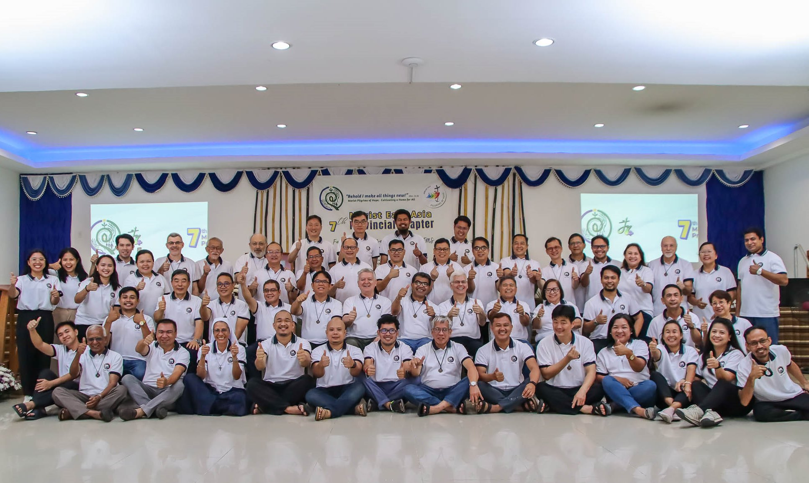

ABOUT US
Serving with Faith, Education, and Compassion since 1817. An inspiration from St. Marcellin Champagnat, our Founder.
The Marist Story
Our Foundation
The Marist Brothers of East Asia trace their roots to St. Marcellin Champagnat, who founded the congregation of Marist Brothers in France in 1817. Today, we continue his mission of serving the young, particularly through education and pastoral care.
Our presence in East Asia reflects the global reach of the Marist charism and our commitment to adapt our ministry to local cultures and needs while maintaining the core values of our founder.


"In order to educate the children, we must love them all Equally"
Our Essence
The Pillars of Our Mission
The spiritual and communal foundations that define the Marist way.
Presence
Being close to the young, understanding their needs, and walking alongside them in their journey.
Simplicity
Living modestly and authentically, avoiding ostentation while maintaining dignity and commitment.
Family Spirit
Creating communities of care, mutual support, and belonging where everyone feels valued.
The Journey
Historical Milestones
Our Guardians
Current Leadership

Join the Mission
Whether as a partner, volunteer, or educator, there is a place for you in our global family.